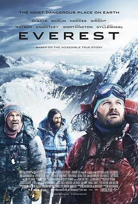

绝命海拔 / Everest
又名：珠峰浩劫(港) / 圣母峰(台) / 珠穆朗玛 / 远征珠峰 / 珠穆朗玛峰
很精彩的喜马拉雅式登山的纪录片，说的是1996年商业登珠峰的故事。电影把远征登山的艰难和危险展示得很透彻，直接把我劝退了。我还是乖乖走短途hiking吧🫠
作品信息
| 导演 | 巴塔萨·科马库 |
| 编剧 | 威廉姆·尼克尔森 / 西蒙·博福伊 |
| 主演 | 杰森·克拉克 / 乔什·布洛林 / 约翰·浩克斯 / 罗宾·怀特 / 艾米丽·沃森 / 迈克尔·凯利 / 凯拉·奈特莉 / 萨姆·沃辛顿 / 杰克·吉伦哈尔 / 克莱夫·斯坦登 / 伊丽莎白·德比齐 / 米娅·高斯 / 马丁·亨德森 / 凡妮莎·柯比 / 汤姆·古德曼-希尔 / 森尚子 |
| 类型 | 剧情 / 传记 / 冒险 |
| 制片国家/地区 | 英国 / 美国 / 冰岛 |
| 语言 | 英语 |
| 上映日期 | 2015-11-03(中国大陆) / 2015-09-02(威尼斯电影节) / 2015-09-25(美国) |
| 片长 | 120分钟 |
| IMDb | tt2719848 |
说过什么
2023-09-03 21:14:36
看过 · 时间来自广播，短评来自标记页
很精彩的喜马拉雅式登山的纪录片，说的是1996年商业登珠峰的故事。电影把远征登山的艰难和危险展示得很透彻，直接把我劝退了。我还是乖乖走短途hiking吧🫠
2021-09-16 15:46:45
广播 · 想看
fed by Google
最后一次看到是 2026-08-01T11:04:46+10:00 · 豆瓣原页